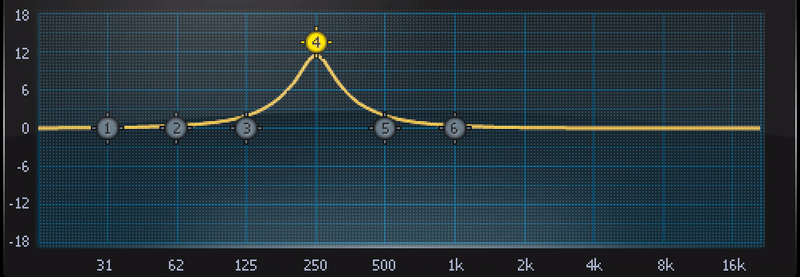
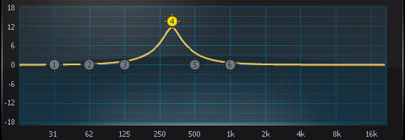

flowEQ
A new way to navigate equalization
October 17th, 2019 - 147th AES Convention - New York, New York, USA
Christian Steinmetz
Music Technology Group, Universitat Pompeu Fabra, Barcelona, Spain
Christian Steinmetz
@csteinmetz1
www.christiansteinmetz.com
christianjames.steinmetz01@estudiant.upf.edu
What is flowEQ?

Using machine learning for simplified control of parametric EQ
Equalization

Analog parametric equalizer
Digital parametric equalizer plugin
Gain |
|
Frequency |
 |
Q (bandwidth) |
 |
What we recorded...
What we want...
How do we set the EQ to get there?
The parameters to achieve this are non-obvious
(except to the well trained audio engineer)
Theory
Implementation